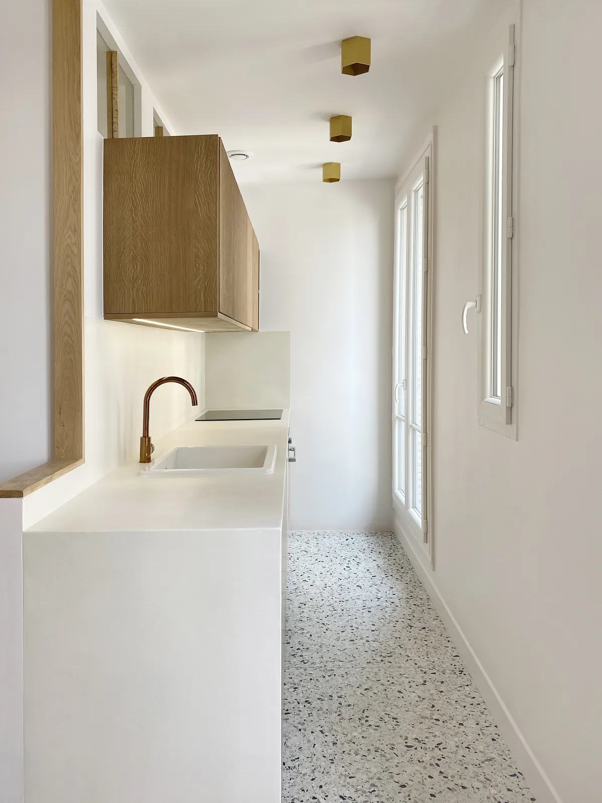
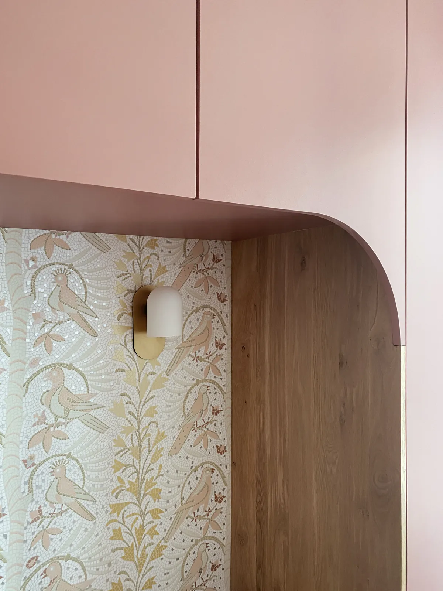
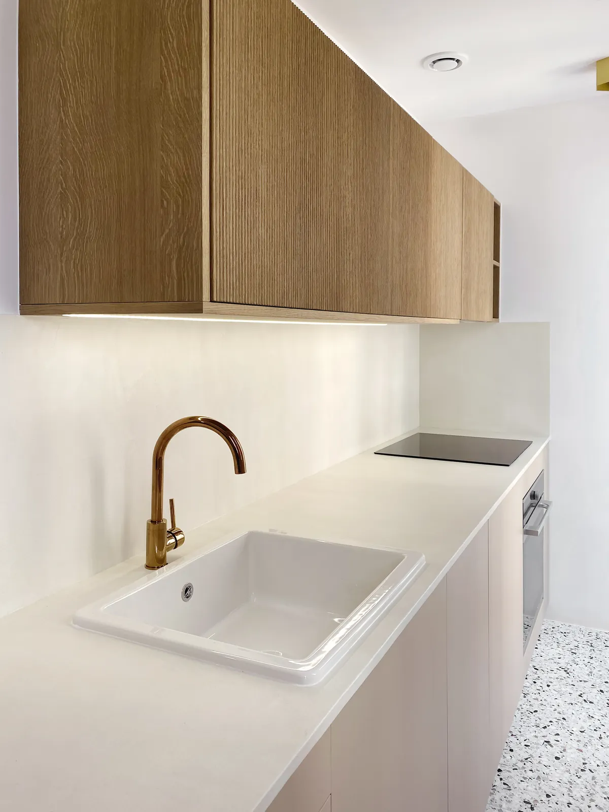
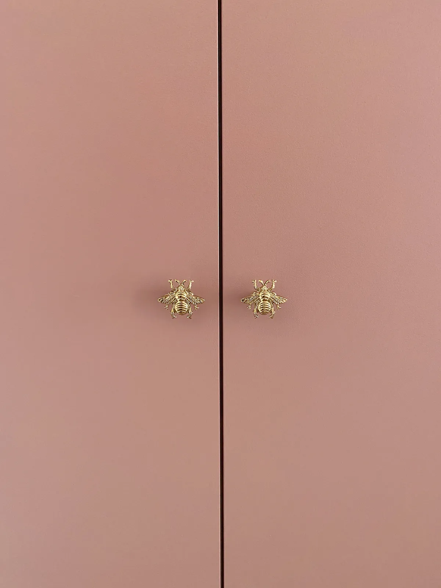

Stouls Studio / Portfolio / Apartment, Levallois-Perret II
Apartment, Levallois-Perret II
A second apartment in Levallois-Perret, kept pale and calm, with colour saved for the joinery.
- Type
- Apartment renovation
- Location
- Levallois-Perret, west of Paris
- Work by the studio
- Renovation with a made-to-measure kitchen and joinery
The kitchen runs along a wall of windows, so it was kept as light as the room: a white worktop that folds down to the floor at its end, an oak wall cabinet, a copper tap and a terrazzo floor. Three brass ceiling lights follow the line of the worktop. An oak-framed opening above the counter lets daylight through to the room behind.
The colour is in the cupboards. A run of tall storage is painted blush pink and fitted with small brass knobs shaped like flowers. Below it, a niche is set in a curved oak surround and lined with a wallpaper of birds and foliage drawn like a mosaic, with a single wall light.
More photographs of this apartment will be added here.




A project like this one
If this is close to what you have in mind for Paris, tell Margaux. A link to this page and two lines about your budget and timing are enough to start.
Previous: Apartment, Levallois-PerretNext: Apartment, Boulogne-Billancourt